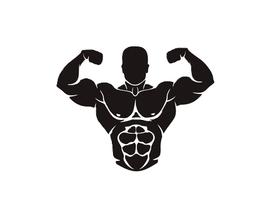

În cele ce urmează vor fi exemplificate exerciții în scopul de a oferi un start potrivit tuturor conform nevoilor fiecăruia.
Bineînțeles, acestea sunt doar exemple, anatomia, hipertrofia și culturismul în general fiind deosebit de complexe.
O scurtă mențiune ar fi că informațiile de mai jos sunt simplificate.
Pentru mai multe detalii despre sport consultați pagina aceasta.
Pentru un catalog de exerciții complet, aici.
Nu există un adevăr absolut deoarece fiecare corp este unic. Experimentează! Bicepsul, cel mai popular mușchi, ar trebui antrenat în două ipostaze. Una standard, în care urmărim dezvoltarea forței, iar cealaltă în care biceps este întins și este constant sub presiune.
Bineînțeles, exista suficiente variante, însă cele mai cunoscute sunt Flexie cu gantere și Flexie Preacher .
Tricepsul constituie 70% din masa brațului. Un braț mare înseamnă un triceps mare.
Pentru antrenarea completă a acestuia, există 3 tipuri de exerciții. Unul pentru capul scurt al tricepsului, altul pentru capul lung iar ultimul o variantă de împins.
Variante des întâlnite sunt Extensie la cablu pentru triceps , Extensii pentru triceps culcat și Flotări la paralele.
Pieptul, preferatul tuturor, este alcătuit din partea superioară și inferioară a pectoralilor.
Pentru un piept complet este necesară o variație de împins inclinat, una plată și orice fel de fluturări.
Varietatea este din belșug în cadrul pieptului. Niște exemple solide sunt Presă cu gantere la bancă înclinată, Împins la piept la mașina Smith și Fluturări la cabluri
Umerii sunt cu grupa musculara care te fac cu adevărat MARE odată cu musculatura acestora dezvoltată. Sunt compuși din deltoidul anterior (față), lateral (mijloc) și posterior (spate).
Pentru umeri mari, toate aceste părți necesită antrenate.
Exerciții bune sunt Împins cu gantere pentru umeri din poziția așezat, Ridicări laterale și Trageri la față cu frânghie la cablu.
Spatele, un grup de mușchi foarte complex fară de care nu poți avea un fizic de invidiat care să nu fure ochi.
Fară să ne complicăm, pentru forma de V mult râvnită este nevoie de măcar de un exercițiu de tragere orizontală (grosime), unul de tragere verticală (lățime) și eventual ceva pentru trapezul superior.
Cele mai populare din respectivele categorii sunt Ramat cu haltera din poziție aplecată, Tracțiuni la helcometru și Ridicări de trapez cu gantere .
Abdomenul se face și la sală, nu numai în bucătărie! Pentru dezvoltarea pătrățelelor, se recomandă lucrarea atât a abdomenului superior cât și inferior.
Două exerciții foarte bune sunt Abdomene la aparat și Ridicări de genunchi din atârnat.
Picioarele reprezintă adevărata putere din corp. Picioarele, precum alte grupe musculare, sunt foarte complexe anatomic cât și hipertrofic.
Însă, pentru cvadriceps sunt îndeajuns orice fel de Genoflexiuni cu haltera și Extensie la aparat pentru picioare cu intensitatea potrivită.
Daca tot suntem determinați și nu sărim peste picioare, ar fi o crimă să neglijăm bicepsul femural.
Suficiente sunt Flexii de picioare culcat și Îndreptări românești de orice fel.
Gambele, un mușchi foarte important, adesea antrenat superficial sau omis de multă lume.
Științific vorbind, a fost demonstrat că gamebele cresc mai mult când sunt antrenate doar în partea negativă a mișcării.
Hipertrofic, recomandarea mea personală pentru vergeturi pe gambe este orice variație de Ridicări din gambe din picioare, executând doar negativul mișcării cu intensitatea mare.